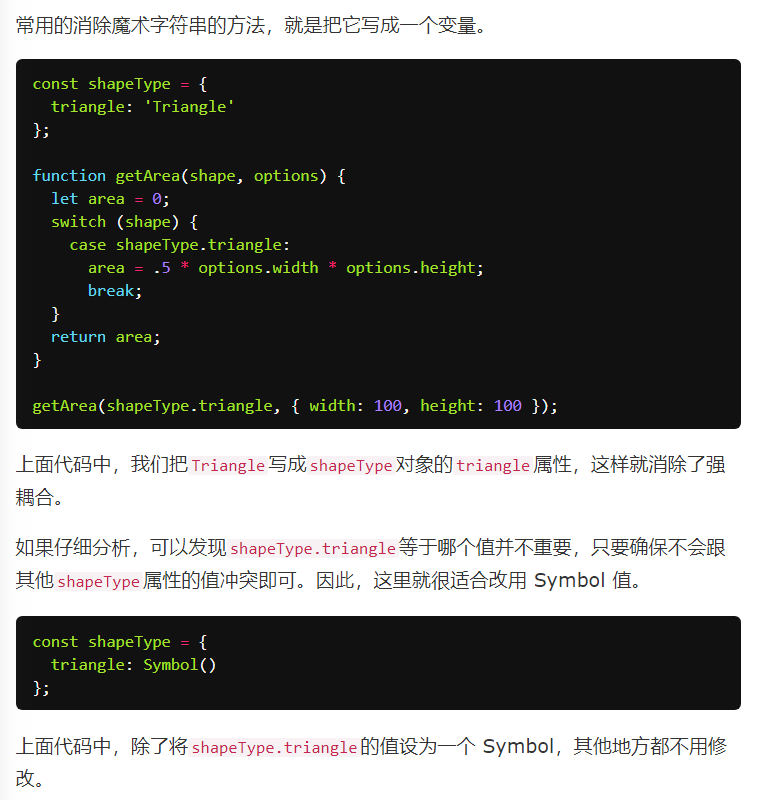

基本特性
ES6 引入了一种新的原始数据类型Symbol，表示独一无二的值。它是 JavaScript 语言的第七种数据类型，前六种是：undefined、null、布尔值（Boolean）、字符串（String）、数值（Number）、对象（Object）。
通过Symbol函数生成，可作为对象属性名
注意，Symbol函数前不能使用new命令，否则会报错。这是因为生成的 Symbol 是一个原始类型的值，不是对象。也就是说，由于 Symbol 值不是对象，所以不能添加属性。基本上，它是一种类似于字符串的数据类型。
Symbol函数可以接受一个字符串作为参数，表示对 Symbol 实例的描述，主要是为了在控制台显示，或者转为字符串时，比较容易区分。
Symbol 值不能与其他类型的值进行运算，但可以显式转为字符串或布尔值（不能转数字）
用途
1.作为属性名：创建并赋值，使用方括号语法
2.定义常量时使用Symbol，能确保其具有不同值
3.消除魔术字符串
魔术字符串指的是，在代码之中多次出现、与代码形成强耦合的某一个具体的字符串或者数值。风格良好的代码，应该尽量消除魔术字符串，改由含义清晰的变量代替。

4.作为属性名
Symbol 作为属性名，该属性不会出现在for...in、for...of循环中，也不会被Object.keys()、Object.getOwnPropertyNames()、JSON.stringify()返回。但是，它也不是私有属性，有一个Object.getOwnPropertySymbols方法，可以获取指定对象的所有 Symbol 属性名。
另一个新的 API，Reflect.ownKeys方法可以返回所有类型的键名，包括常规键名和 Symbol 键名。
因此可以用来定义一些非私有的，但不希望被for in遍历到的方法或属性
=============
Symbol.for
1.Symbol.for方法接受一个字符串作为参数，然后搜索有没有以该参数作为名称的 Symbol 值。如果有，就返回这个 Symbol 值，否则就新建并返回一个以该字符串为名称的 Symbol 值。
2.值得注意的是，Symbol方法生成的Symbol，不会被Symbol.for查找到
3.Symbol.keyFor方法返回一个已登记的 Symbol 类型值的key
4.需要注意的是，Symbol.for为 Symbol 值登记的名字，是全局环境的，可以在不同的 iframe 或 service worker 中取到同一个值。
============
实例：
用于Node模块下创建单例模式
=>单例模式，访问一个类时永远返回同一个实例；通常的实现方式是检查这个类的实例是否已经存在，如存在直接返回，不存在才进行构造
将单例对象通过Symbol属性注册到global
=============
内置Symbol值，通过这些值重新定义一些内部方法
1.Symbol.hasInstance

2.对象的Symbol.isConcatSpreadable属性等于一个布尔值，表示该对象用于Array.prototype.concat()时，是否可以展开。默认为undefined，展开，等同于tru
3.Symbol.species

因为map和filter创建衍生对象时，使用了MyArray的构造方法
Symbol.species可以修改这一定义（须采用get取值器）
class MyArray extends Array {
static get [Symbol.species]() { return Array; }
}
默认的Symbol.species属性等同于下面的写法。

总之，Symbol.species的作用在于，实例对象在运行过程中，需要再次调用自身的构造函数时，会调用该属性指定的构造函数。它主要的用途是，有些类库是在基类的基础上修改的，那么子类使用继承的方法时，作者可能希望返回基类的实例，而不是子类的实例。
4.对象的Symbol.match属性，指向一个函数。当执行str.match(myObject)时，如果该属性存在，会调用它，返回该方法的返回值。
 注意match方法在es6中实际调用的是正则对象上的方法
注意match方法在es6中实际调用的是正则对象上的方法5.Symbol.replace指向一个方法，当该对象被String.prototype.replace方法调用时，会返回该方法的返回值。

6.对象的Symbol.search属性，指向一个方法，当该对象被String.prototype.search方法调用时，会返回该方法的返回值。
7.对象的Symbol.split属性，指向一个方法，当该对象被String.prototype.split方法调用时，会返回该方法的返回值。
8.对象的Symbol.iterator属性，指向该对象的默认遍历器方法。对象进行for...of循环时，会调用Symbol.iterator方法，返回该对象的默认遍历器。
9.对象的Symbol.toPrimitive属性，指向一个方法。该对象被转为原始类型的值时，会调用这个方法，返回该对象对应的原始类型值。
Symbol.toPrimitive被调用时，会接受一个字符串参数，表示当前运算的模式，一共有三种模式。
* Number：该场合需要转成数值
* String：该场合需要转成字符串
* Default：该场合可以转成数值，也可以转成字符串
10.对象的Symbol.toStringTag属性，指向一个方法。在该对象上面调用Object.prototype.toString方法时，如果这个属性存在，它的返回值会出现在toString方法返回的字符串之中，表示对象的类型。也就是说，这个属性可以用来定制[object Object]或[object Array]中object后面的那个字符串。
同时，es6新增了若干默认的Symbol.toStringTag
11.对象的Symbol.unscopables属性，指向一个对象。该对象指定了使用with关键字时，哪些属性会被with环境排除。
（注意with本身是不被推荐使用的，严格模式下被禁止）